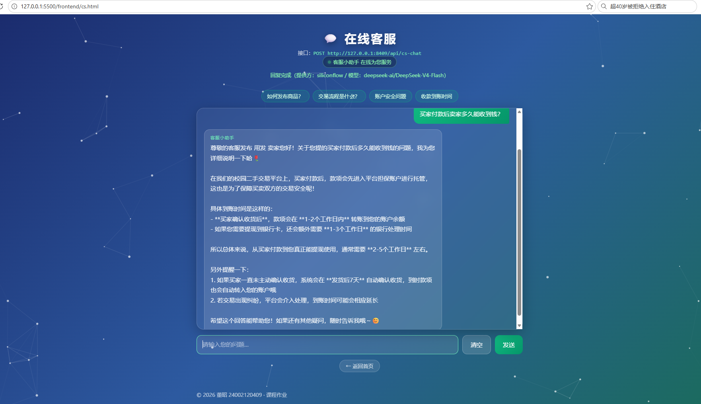
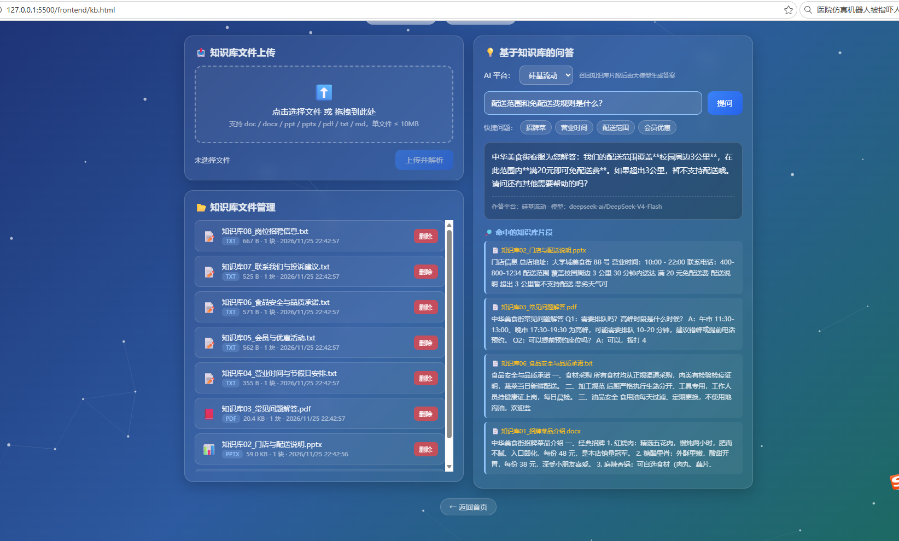
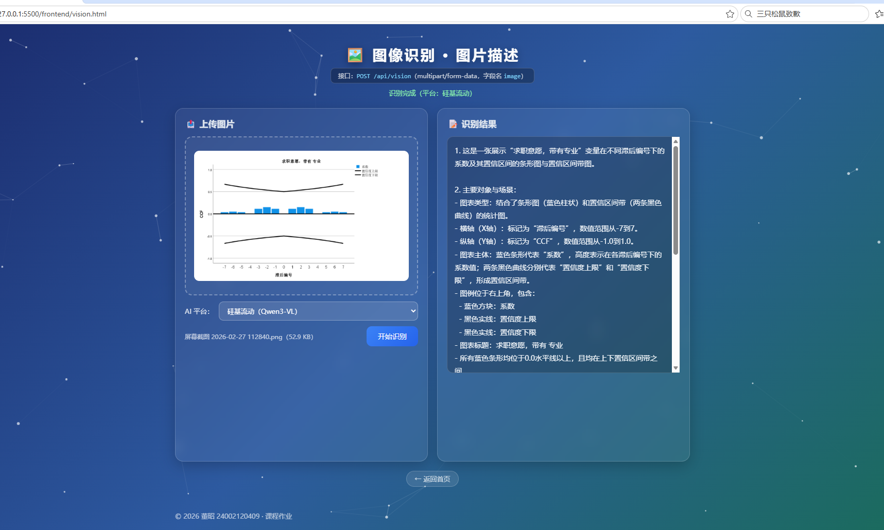
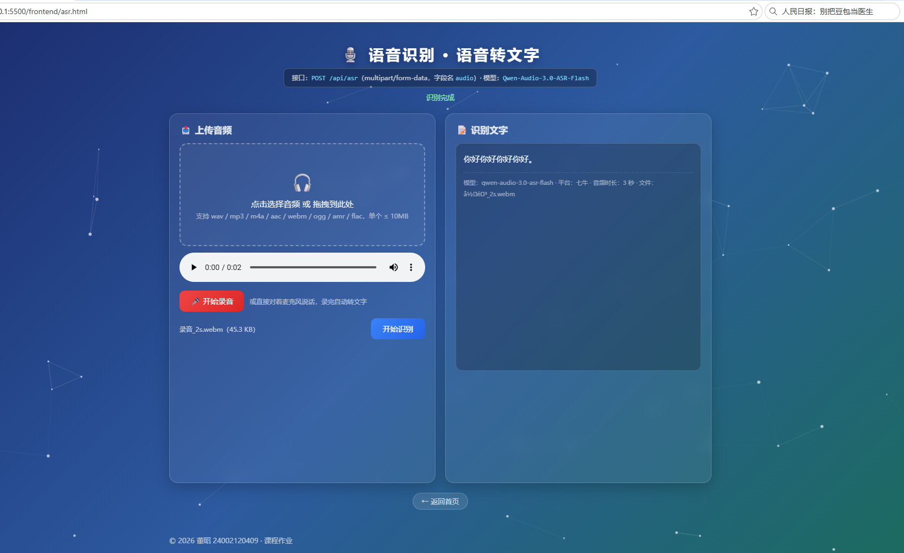

以本地 Node 服务作为 API 网关，把「在线客服对话 / 知识库检索增强 / 图像理解 / 语音识别」四类大模型能力 分别落地为可交互页面，从接口调试到前端渲染完整跑通一遍，并用真实截图记录每一环的实测结果。
电商售后场景，客服人设 + 上下文记忆，流式逐字上屏。
POST /api/cs-chat
9 份门店文档上传入库，先检索片段再生成，答案可溯源。
POST /api/kb/chat
上传中文图表截图，输出结构化的读图描述与结论。
POST /api/vision
录音或上传音频，转写为中文文本，附带识别元信息。
POST /api/asr

面向校园二手交易平台的售后咨询场景，客服人设限定在售后与交易规则范围内作答，回答按条目分段，便于用户快速抓到关键信息。
messages 数组，保留多轮上下文，追问不失忆
先把门店经营文档批量入库，提问时按语义相似度检索命中片段，再把片段作为上下文交给大模型生成答案，答案下方回显原始片段，做到有据可查。

上传一张文档里的中文双轴柱状图，模型先判断图表类型，再定位坐标轴与图例，最后给出数据层面的结论，输出是结构化文本而不是泛泛描述。
image
既支持页面内直接录音，也支持拖入已有音频文件，提交后返回中文转写结果，并附带模型、平台、音频时长、文件大小等元信息，方便判断识别是否正常。
客服对话与知识库问答响应最快，配合流式输出体验最好；难点不在调用，而在提示词与上下文组织。
命中片段不准时，模型只能基于错误上下文作答。答案区回显原文片段，是验证检索质量最直接的手段。
视觉与语音模型的返回值都是结构化文本，前端只需负责展示层，不需要额外解析协议。
所有接口经本地 Node 服务转发，API Key 留在服务端，前端页面拿不到密钥，避免泄露风险。